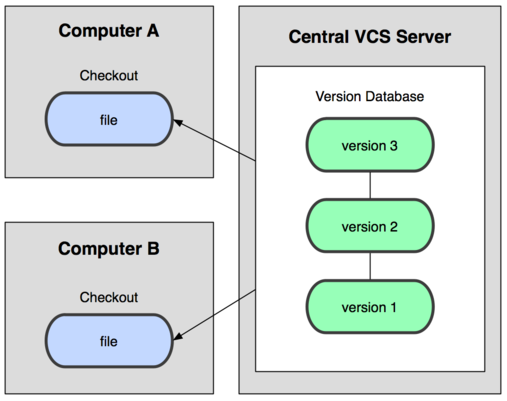
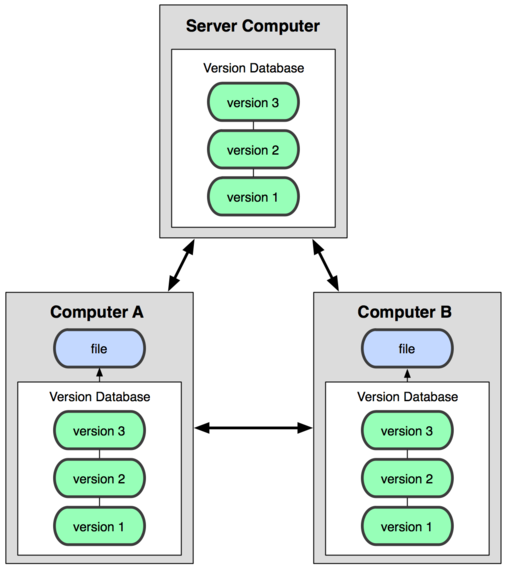
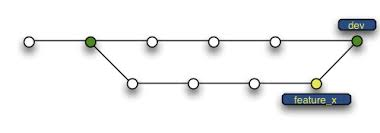
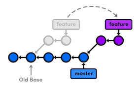

Git
Jinkubator #21
WhoAmI
- Adam Ruka
- Twitter @adam_ruka
- blog endoflineblog.com
- software developer at Pragmatists
- we love Agile and XP
- we're permanently hiring
You should work for us!

Agenda
- comparison between Centralized VCS and Distributed VCS
- Git concepts in analogy to its SVN counterparts
- console usage & basic workflow
- visual tools & IDE integration
- GitHub
- Advanced workflows. Branching. Merging. GitFlow.
- some advanced topics - aliases, remotes, rebasing
- whatever YOU want
Traditional Version Control Systems

Distributed Version Control Systems

Typical SVN workflow
checkout- do some work...
commit- if somebody commited in the mean time -
update, then go to 3.
Typical Git workflow
clone- do some work...
addto indexcommitpush- if somebody commited in the mean time -
pull, then go to 5.

Branches

GitFlow

Rebasing

Recommended reading
"Pro Git" by Scott Chacon, available for free on the Git SCM page (http://git-scm.com/book/en/v2).
After reading (and understanding!) the first three chapters, you should be an advanced Git user.
Thank you
Free-for-all section